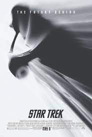

HOME
James T. Kirk tries to live up to his father's legacy with Mr. Spock keeping him in check as a vengeful Romulan from the future creates black holes to destroy the Federation one planet at a time.
Company credits:
Paramount Pictures, Spyglass Entertainment
Release Date:
May 8th, 2009
Genres:Action, Adventure, Sci-Fi
Rating:PG13
Running Time127 minutes